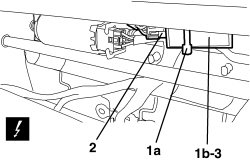

7045M32 ELECTRONIC THERMOSTAT FOR HEATING CIRCUIT OF ONE FRONT SEAT, LH OR RH R R
- Path
- Procedures > 70 FITTINGS > 7045 FRONT SEATS > 7045M FRONT SEAT HEATING > 7045M32 ELECTRONIC THERMOSTAT FOR HEATING CIRCUIT OF ONE FRONT SEAT, LH OR RH R R
- Kind
- repair procedure (removal / refitting; the operation number is the code)
- Applies to
- all engines; all production periods; only with equipment: Electric seats
- Interactive page
- https://sloeber94.github.io/elrnDB-aBrrSpdr/en/#/946004179
Applies to: all engines; all production periods; only with equipment: Electric seats
 Removing
Removing
 Refitting
Refitting- Raise the seat until it is in the end of travel position.
1. Working under the front part of the cushion, cut the thermostat (1b) retaining band (1a).
2. Detach the electrical connection for the thermostat.
Description | Component |
|---|---|
DRIVER'S FRONT SEAT HEATER CONTROL UNIT | |
PASSENGER FRONT SEAT HEATER CONTROL UNIT |
3. Keep the thermostat.

Applies to: all engines; all production periods; only with equipment: Electric seats
Refitting
Removing- Check that the thermostat is not damaged.
- Connect the electrical connection for the thermostat.
- Fit the thermostat retaining band.
- Move the seat to an intermediate height.